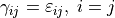
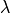

1. CAUCHY3D-DP¶
1.1. Elastoplastic description¶
In the undeformed configuration under the assumption of small displacements, the constitutive law of an isotorpic linear elastic material is given by the following relation in indicial notation (i=1,…,3, and summation over repeated indices is taken into account):
where , are the second order stress and strain tensors respectively and are the material moduli corresponding to triaxial compression and shear. From the decomposition of the stress and strain second order tensors into shperical and deviatoric part we obtain the following relations:
The elastic constitutive description in Voigt formulation is given as follows:
![\begin{align}
\begin{bmatrix}
\sigma_{11}\\
\sigma_{22}\\
\sigma_{33}\\
\sigma_{23}\\
\sigma_{13}\\
\sigma_{12}
\end{bmatrix}
=
\begin{bmatrix}
\frac{4G}{3}.+K & -\frac{2G}{3}.+K &-\frac{2G}{3}.+K &0 &0 &0\\
-\frac{2G}{3}.+K & \frac{4G}{3}.+K &-\frac{2G}{3}.+K &0 &0 &0\\
-\frac{2G}{3}.+K & -\frac{2G}{3}.+K &\frac{4G}{3}.+K &0 &0 &0\\
0 & 0 &0 &G &0 &0\\
0 & 0 &0 &0 &G &0\\
0 & 0 &0 &0 &0 &G
\end{bmatrix}
\begin{bmatrix}
\varepsilon_{11}\\
\varepsilon_{22}\\
\varepsilon_{33}\\
\gamma_{23}\\
\gamma_{13}\\
\gamma_{12}
\end{bmatrix},
\end{align}](_images/math/d545231749b0c16cb4719658e0a0b84b10968b09.png)
where  and . The yield criterion is given by the following relation:

The relationship between the plastic strain rate and the applied stresses satisfying the yield criterion involes the plastic multiplier . In this relation G is the plastic potential function given by:
When associative plasticity is used we have that and the Saint-Venant’s coaxiality assumption (normality rule) ensues.
In the case of elasto-viscoplasticity the viscoplastic multiplier is given by with . Finally, we note that when and zero otherwise. For an associative material according to [PON2002] the viscoplastic potential is then given by:
The consistency condition then reads:
where
![\begin{align}
\begin{aligned}
&\Delta p=3 K \left(\Delta \varepsilon_{v}-\Delta \varepsilon^p_{v}\right)= 3 K \left(\Delta \varepsilon_{v}-\Delta \lambda \frac{\partial G}{\partial p}\right)\\
&\Delta s_{ij} = G \left(\Delta e_{ij}-\Delta e^p_{ij}\right)=G \left(\Delta e_{ij}-\Delta \lambda \left(\delta_{mi}\delta_{nj}-\frac{1}{3}\delta_{ij}\delta_{mn}\right)\frac{\partial G}{\partial s_{mn}}\right)\\
&\Delta e^p_q = \Delta {\lambda}\sqrt{\left(\delta_{mi}\delta_{nj}-\frac{1}{3}\delta_{ij}\delta_{mn}\right)\frac{\partial G}{\partial s_{mn}}\left(\delta_{pi}\delta_{qj}-\frac{1}{3}\delta_{ij}\delta_{pq}\right)\frac{\partial G}{\partial s_{pq}}}\\
&\Delta\dot{\lambda} = \frac{\Delta <F>}{\eta^{vp}}
\end{aligned}
\end{align}](_images/math/58c798972e5529f9f83d5ae31d183a7930849918.png)
solving for  we obtain:
we obtain:
![\begin{align}
\begin{aligned}
\Delta \lambda =\frac{2G\frac{\partial F}{\partial \sigma_{ij}}\Delta e_{ij}+\frac{\partial F}{\partial p}K\Delta \varepsilon_v}{2G\left(\delta_{mi}\delta_{nj}-\frac{1}{3}\delta_{ij}\delta_{mn}\right)\frac{\partial F}{\partial s_{ij}}\frac{\partial G}{\partial s_{mn}}+K\frac{\partial F}{\partial p}\frac{\partial G}{\partial p}}+\frac{\eta^{vp}\Delta \dot{\lambda}}{2G\left(\delta_{mi}\delta_{nj}-\frac{1}{3}\delta_{ij}\delta_{mn}\right)\frac{\partial F}{\partial s_{ij}}\frac{\partial G}{\partial s_{mn}}+K\frac{\partial F}{\partial p}\frac{\partial G}{\partial p}}
\end{aligned}
\end{align}](_images/math/19b9ebd3e0195a8e100d2aca983e61b021cd6def.png)
The incremental elastoplastic constitutive description in Voigt formulation is given by solving numerically for that satisfies the consistency condition and the incremental stress strain relation. Then the material algorithm has converged to a new state .
1.2. Material properties¶
For the three dimensional Cauchy Drucker-Prager material the following material properties need to be specified:
Properties |
Material Property |
Compatible units |
|---|---|---|
1 |
|
|
2 |
|
|
3 |
||
4 |
||
5 |
||
6 |
||
7 |
||
8 |
||
9 |
||
10 |
||
11 |
|
|
12 |
|
|
13 |
||
14 |
||
15 |
||
16 |
||
17 |
||
18 |
||
19 |


1.3. Mapping of the accessible state variables¶
The number of state variables and their meaning are defined in the following table.
List of state variables: |
VARIABLE NAME |
SYMBOL |
|||
|---|---|---|---|---|---|
SV1 |
STRESS_1 |
Number of stress components: |
6 |
||
SV2 |
STRESS_2 |
Number of failure surfaces: |
1 |
||
SV3 |
STRESS_3 |
Number of hardening parameters: |
0 |
||
SV4 |
STRESS_4 |
Number of user output variables: |
27 |
||
SV5 |
STRESS_5 |
Number of reserved variables: |
10 |
||
SV6 |
STRESS_6 |
|
Total number of state variables: |
37 |
|
SV7 |
E_TOTAL_1 |
||||
SV8 |
E_TOTAL_2 |
||||
SV9 |
E_TOTAL_3 |
||||
SV10 |
E_TOTAL_4 |
||||
SV11 |
E_TOTAL_5 |
||||
SV12 |
E_TOTAL_6 |
||||
SV13 |
E_PL_1 |
or |
|||
SV14 |
E_PL_2 |
or |
|||
SV15 |
E_PL_3 |
or |
|||
SV16 |
E_PL_4 |
or |
|||
SV17 |
E_PL_5 |
or |
|||
SV18 |
E_PL_6 |
or |
|||
SV19 |
NA |
||||
SV20 |
FSURF_1 |
||||
SV21 |
LAMDA_1 |
||||
SV22 |
D_E_PL_1 |
or |
|||
SV23 |
D_E_PL_2 |
|
|||
SV24 |
D_E_PL_3 |
or |
|||
SV25 |
D_E_PL_4 |
or |
|||
SV26 |
D_E_PL_5 |
or |
|||
SV27 |
D_E_PL_6 |
or |
|||
SV28 |
RESERVED_1 |
USER VARIABLE 1 |
|||
SV29 |
RESERVED_2 |
USER VARIABLE 2 |
|||
SV30 |
RESERVED_3 |
USER VARIABLE 3 |
|||
SV31 |
RESERVED_4 |
USER VARIABLE 4 |
|||
SV32 |
RESERVED_5 |
USER VARIABLE 5 |
|||
SV33 |
RESERVED_6 |
USER VARIABLE 6 |
|||
SV34 |
RESERVED_7 |
USER VARIABLE 7 |
|||
SV35 |
RESERVED_8 |
USER VARIABLE 8 |
|||
SV36 |
RESERVED_9 |
USER VARIABLE 9 |
|||
SV37 |
RESERVED_10 |
USER VARIABLE 10 |
|||
End of list |

 or
or Ponthot, J. P. (2002). Unified stress update algorithms for the numerical simulation of large deformation elasto-plastic and elasto-viscoplastic processes. International Journal of Plasticity, 18(1), 91-126.